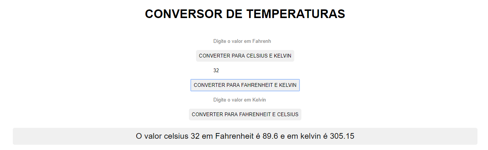

PROJETOS PRÓPRIOS
- CONVERSOR DE TEMPERATURAS
-
DESCRIÇÃO
Nesta aplicação é possível converter as 3 unidades de temperatura mais utilizadas, Celsius, Fahrenheit e Kelvin.
Digitando o valor em um dos campos de entrada e clicando em converter o usuário terá o valor das outras duas unidades logo abaixo de uma forma bem explicada.
